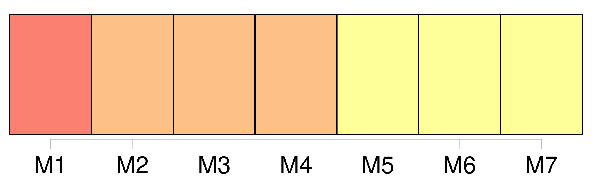
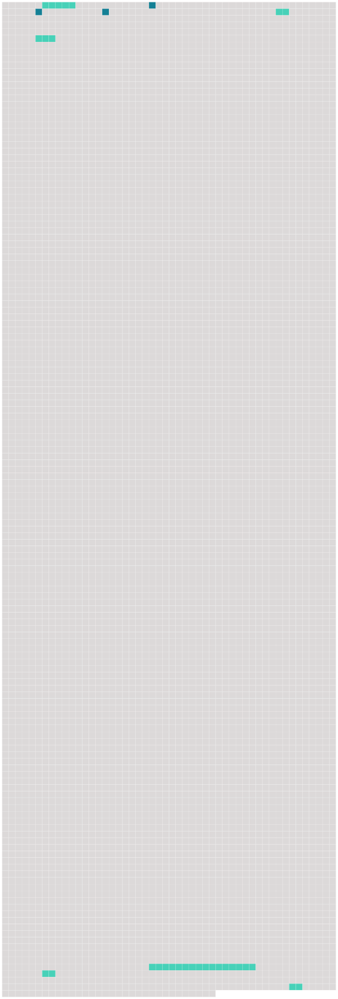

Longueur nb maillons : 9 mentions |
 |
Au milieu de la salle figurait [une table en poirier noirci] , aux pieds tournés en spirales comme des colonnes salomoniques, [que] les tarets avaient piquée de milliers de trous, sans être troublés dans leur travail silencieux.
Une fine couche grise, sur laquelle le doigt eût pu tracer des caractères, [en] couvrait la surface, et montrait qu'on n' [y] mettait pas souvent le couvert.
Deux dressoirs ou crédences de même matière, ornés de quelques sculptures et probablement achetés en même temps que [la table] à des époques plus heureuses, se faisaient pendants d'un côté de la salle à l'autre ; des faïences égueulées, des verreries disparates et deux ou trois rustiques figurines de Bernard Palissy représentant des anguilles, des poissons, des crabes et des coquillages émaillés sur un fond de verdure, garnissaient misérablement le vide des planches. [1 phrases]
À moins d'être un esprit, il n'eût point été prudent de s'y asseoir, et, sans doute, ces sièges ne servaient que lorsque le conciliabule des ancêtres sortis de leurs cadres venaient prendre place à [la table inoccupée] , et devant un souper imaginaire causaient entre eux de la décadence de la famille pendant les longues nuits d'hiver si favorables aux agapes de spectres. [175 phrases]
» Le Pédant reparut bientôt portant un panier de chaque main, et plaça triomphalement au milieu de [la table] une forteresse de pâté aux murailles blondes et dorées, qui renfermait dans ses flancs une garnison de becfigues et de perdreaux. [4 phrases]
Il aurait bien voulu s'approcher de [la table] et prendre sa part de cette frairie à la Gargantua si en dehors des sobriétés érémitiques de la maison ; mais la vue de tous ces nouveaux visages l'épouvantait et sa poltronnerie combattait sa gourmandise. |
 |
Il est possible de télécharger la ressource sur la page Ortolang |
Si vous avez des questions ou vous voyez des erreurs, merci d'envoyer un mail à silvia.federzoni89@gmail.com |